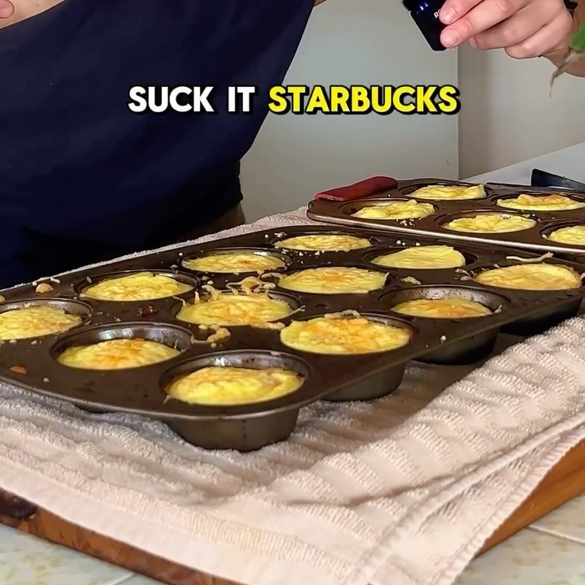

Egg Bites Starbucks
Ingredientes:
- 12 huevos grandes
- 2 tazas de requesón bajo en grasa
- Sal, al gusto
- Pimienta, al gusto
Instrucciones:
- Precalienta tu horno a 375°F (190°C).
- En una licuadora, combina los huevos, el requesón, la sal y la pimienta. Mezcla hasta obtener una
mezcla suave.
- Engrasa ligeramente un molde para cupcakes o cúbrelo con moldes de silicona.
- Distribuye la mezcla de huevo de manera uniforme en el molde para cupcakes, llenando cada cavidad
hasta aproximadamente tres cuartas partes.
- Añade las coberturas deseadas, como verduras, queso o carnes. Asegúrate de tener en cuenta los
macros de estos ingredientes adicionales.
- Coloca el molde en el horno y hornea durante 20-30 minutos, o hasta que los bocaditos de huevo estén
firmes y ligeramente dorados.